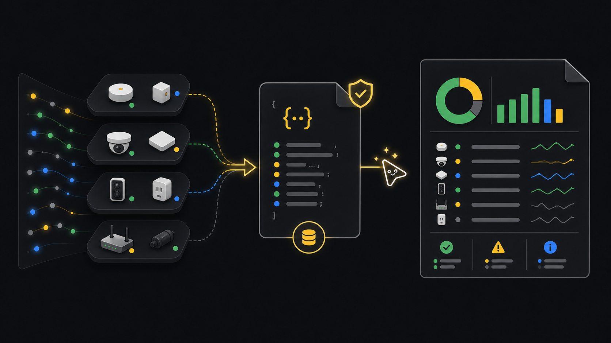

Reports
Daily fleet report.
Use this workflow when a daily review, escalation, or customer update needs current fleet state, clear counts, and a report that can be regenerated from the same source data.
Ask an agent
Ask for the report outcome. The workflow keeps the readable report tied to the saved source data.
Create today's fleet report.
Use the ready tenant, or ask which tenant if more than one is ready.
Use a 24-hour window unless I give a different one.
Save the deep-dive JSON first, then render a Markdown report from it.
Show the report path, source path, headline counts, and anything that needs follow-up.Workflow
- StartPick scopeChoose the tenant and reporting window.
- SourceDeep-dive JSONSave the structured snapshot first.
- RenderCreate reportGenerate Markdown or PDF from the same source file.
- CompareFleet snapshotKeep compact counts for quick trend checks.
- HandoffSummarizeReturn paths, counts, and follow-up items.
Goal
The report should come from a saved JSON input, not from a separate manual summary. That keeps the handoff reproducible and gives an agent or script a source file to reuse.
Commands
Create the deep-dive source file
The
--windowvalue is in hours. Use 24 for daily review.xyte-cli ops inspect deep-dive \ --tenant <tenant-id> \ --provider-scope auto \ --window 24 \ --render json \ --out ./artifacts/xyte-deep-dive.daily.json \ --strict-jsonRender a Markdown report
Markdown is easy to review in a terminal, commit comment, or support note.
xyte-cli ops report generate \ --tenant <tenant-id> \ --input ./artifacts/xyte-deep-dive.daily.json \ --out ./reports/xyte-daily.md \ --render markdownRender a PDF when you need an attachment
Use the same JSON input so the Markdown and PDF tell the same story.
xyte-cli ops report generate \ --tenant <tenant-id> \ --input ./artifacts/xyte-deep-dive.daily.json \ --out ./reports/xyte-daily.pdf \ --render pdfKeep a compact fleet snapshot
This is useful for dashboards and quick trend checks.
xyte-cli ops inspect fleet \ --tenant <tenant-id> \ --provider-scope auto \ --render json \ --out ./artifacts/xyte-fleet.daily.json
What to look for
- Offline device count and offline rate.
- Active incidents and whether they cluster in one space, model, or partner.
- Open tickets that need follow-up.
- Churn in the selected window. If churn is noisy, rerun with a shorter window such as 12 hours.
# Handoff summary
Devices: 124
Offline devices: 7
Active incidents: 18
Open tickets: 3
Report: ./reports/xyte-daily.mdYou are done when the report exists, the source JSON exists, and the headline numbers are clear enough to paste into a status update.
If it fails
Confirm the input file came from ops inspect deep-dive, not ops inspect fleet.
Create ./artifacts and ./reports, then rerun the command.
Use a shorter --window and generate a new source JSON before rendering the report.